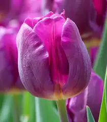

1.Tulip
Tulips are popular spring-blooming plants known for their vibrant, cup-shaped flowers. They belong to the lily family and are grown from bulbs, which are stored underground. Tulips come in a wide array of colors, including red, yellow, pink, purple, and even black.

2.Rose
The rose flower, renowned for its beauty and fragrance, is a popular and beloved floral choice worldwide. It comes in a wide array of colors and is often associated with love, romance, and affection. Roses are known for their soft, delicate petals and their distinctive, often thorny stems.